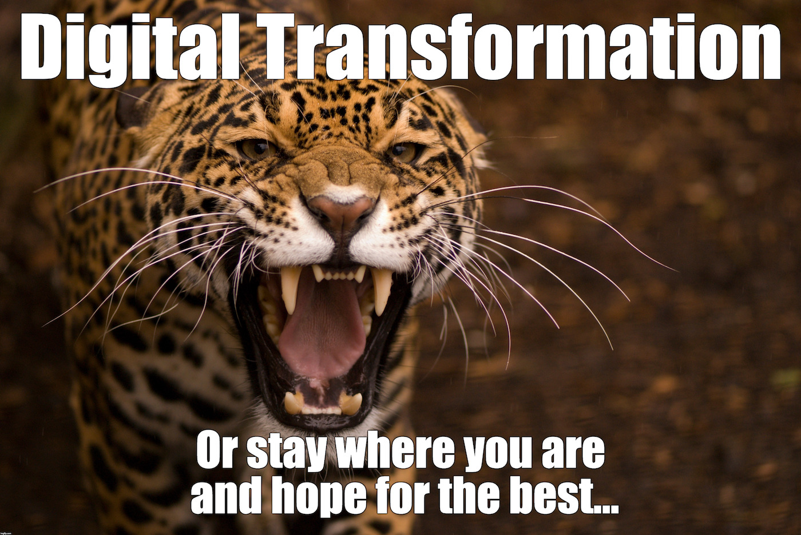
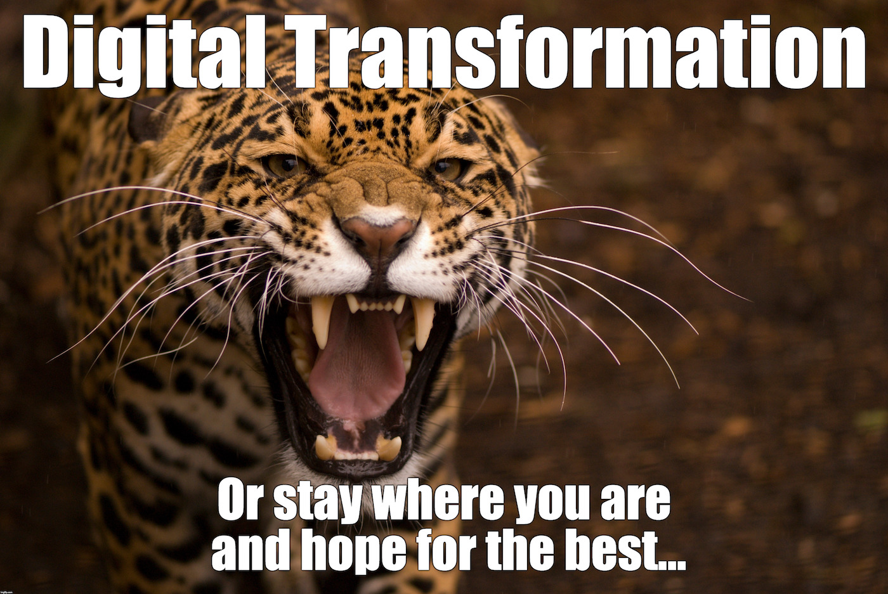

Accelerate Sampler
GLS Logistics [https://gls-group.eu/], Eschborn, Germany [https://gls-group.eu/DE/en/home]
Erik Wilde (@dret)
Axway Catalyst
February 20, 2020
 [https://creativecommons.org/licenses/by/4.0/]
[https://creativecommons.org/licenses/by/4.0/]
This work is licensed under a CC
Attribution 4.0 International License [https://creativecommons.org/licenses/by/4.0/]


 
